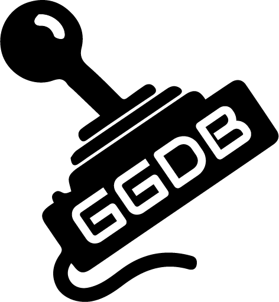

PROFILE FEATURE UNDER DEVELOPMENT
Our intended features for the user profiles include:
- Personal Profile Tracking with links to gaming platforms
- Game List creation to track your personal library, and wishlist
- New game suggestions based on your interests
We look forward to sharing this new feature with you upon completion.